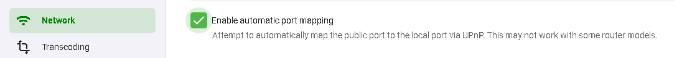
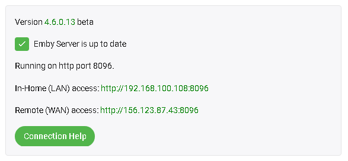

Remote Setup
Emby Server allows you to optionally connect outside your home network. Before we begin, make sure you can connect to your Emby Server properly with apps and devices on your local network. If you have any issues with connections in your network check out local connectivity article.
Turn on Remote Access
The first step is to enable remote access. You do this from the Server's Network menu by enabling "Allow remote connections to this Emby Server". Note that this also needs to be enabled at the user level - see paragraph at the bottom of this article.

On the same page down below this section you will see these options:

If you have a router that support UPnP and have this turned on you can enable the "Enable automatic port mapping" feature. If you do not see this option please install the Port Mapper Plugin from the plugin catalog.
Note
Most routers have the UPnP option turned off by default.
If you turn on automatic port mapping in Emby Server (option shown above) and enable UPnP on your router you likely are done and Emby will work remotely!
Note
If you just enabled UPnP on your router, please restart Emby Server.
Setup Port Forwarding
If you're unable to connect after testing the above settings with automatic port mapping, then you may need to setup port forwarding manually with your router to allow external connectivity to your Emby Server.
To do this, turn off the "Enable automatic port forwarding" option just set and open the web interface for your router. You will need to forward TCP Port 8096 on your router to port 8096 on the Emby Server machine. Do the same for port 8920 as well (if using SSL). It is important that the local IP Address for the Emby Server machine does not change. Use the router's DHCP Reservation feature to do that.
If you want to use different public port numbers, see Network (Hosting) Settings. If you have more than one Emby Server on your local network and the manual port forward method is required, then it will be necessary to change from using the default public port numbers, since each server must have a different public port number.
If you have more than one router, eg an ISP provided router and also your own router, then that would lead to a Double NAT which would lead to failure to reach the server externally. In such cases, it is recommended that one router, e.g. the ISP router, is configured to run in Modem/Bridge mode. If they both need to be running as routers, the configuration would be more complex, needing to cascade the port forward for the public port from the first router to the second and have the actual required port forward on the 2nd router. Also the 2nd router would need to have its local IP Address as a DHCP reservation on the first router.
The process of doing a port forward will be slightly different for each router model.
Here are good step by step guides on how to do this: https://portforward.com/dhcp-reservation/#how-to-make-a-dhcp-reservation-in-your-router http://www.wikihow.com/Set-Up-Port-Forwarding-on-a-Router
This Youtube video also explains Port Forwarding pretty well: https://www.youtube.com/watch?v=Kp-R-eHiQco
Here is an example router setup showing 2 ports forwarded:

Locate Your External Address
Your external address is displayed on the front page of the server dashboard, labeled as Remote access. This is the address you should use when away from home.

Test Your External Address
The easiest way to test your external address, is to open it in a web browser while away from home, or inside your home using a smart phone with the WIFI connection turned off.
Important
Testing your external address inside your home might not work, and this is OK. Some internet routers disable loopback capabilities (going out and coming back in), therefore you might not be able to test this from inside your home network. It's important that you test away from home, or with your smart phone's wifi connection turned off.
If the external address works in a browser, then you're good to go, and can proceed with connecting from Emby apps.
If this doesn't work continue with how to verify your public IP and port.
Verify Public IP and Port
To test these open a browser and visit canyouseeme.org.
The IP you see listed here must match what Emby shows on the dashboard. If it doesn't remote access will not work and likely your ISP is using CG-NAT and you are blocked from running services. In this case visit our forums for assistance.
If the IP address matches the next step is to enter the PORT (8096 or 8920) to test on canyouseeme.org. If it succeeds your Emby Server should be working remotely. If this test fails you should re-check the setup mentioned above. If you have any issues please visit our forums for assistance.
If this doesn't work you will want to try completely disabling (turn off) any local malware & firewall software running on the same host temporarily to see if they may be blocking Emby.
If you have a VPN running on the host computer TURN THIS OFF as that may interfere with your Emby Server routing.
You could also be blocked by your ISP in something known as a cgNAT (carrier grade Network Address Translation). To check if you have been given a cgNAT public IP Address, see if it is within this IP range 100.64.0.0 - 100.127.255.255. The is the range for cgNAT. If this is the case, you would need to ask the ISP to give you a static public IP address outside this range. There is normally a monthly fee for this. One way of spotting if the ISP is blocking the connection, is to open a command prompt and doing a trace route to 8.8.8.8.
On windows it would be: tracert 8.8.8.8
Ignore the first line which will be your own router. What you want to see is if any of the next 3 or 4 lines start with 10., 192. or 172. If the first number is a 172 we need to check the second number to see if it's between 16 to 31. If any of these returned lines matches this you are likely being blocked by your ISP.
If the canyouseeme.org test works but the device is still failing to sign in to the server, check that you have allowed remote connections for the user.
Allow Remote Access for users
A setting is available for user accounts to allow or disallow remote connections. Edit the user settings and tick the "Allow remote connections to this Emby Server" to allow remote connections for a specific user account. Refer to Users Settings.